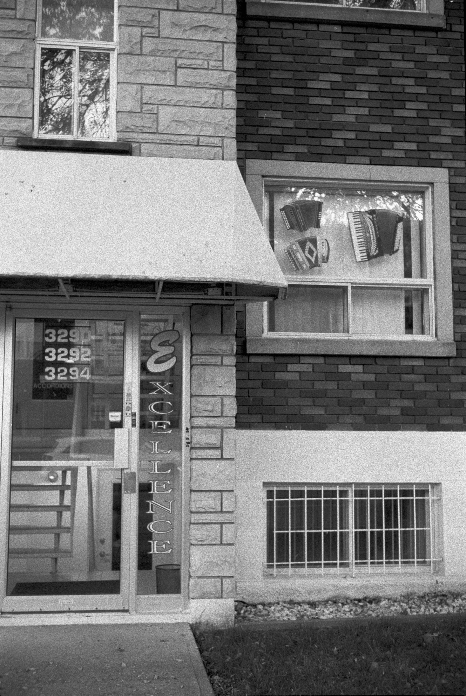
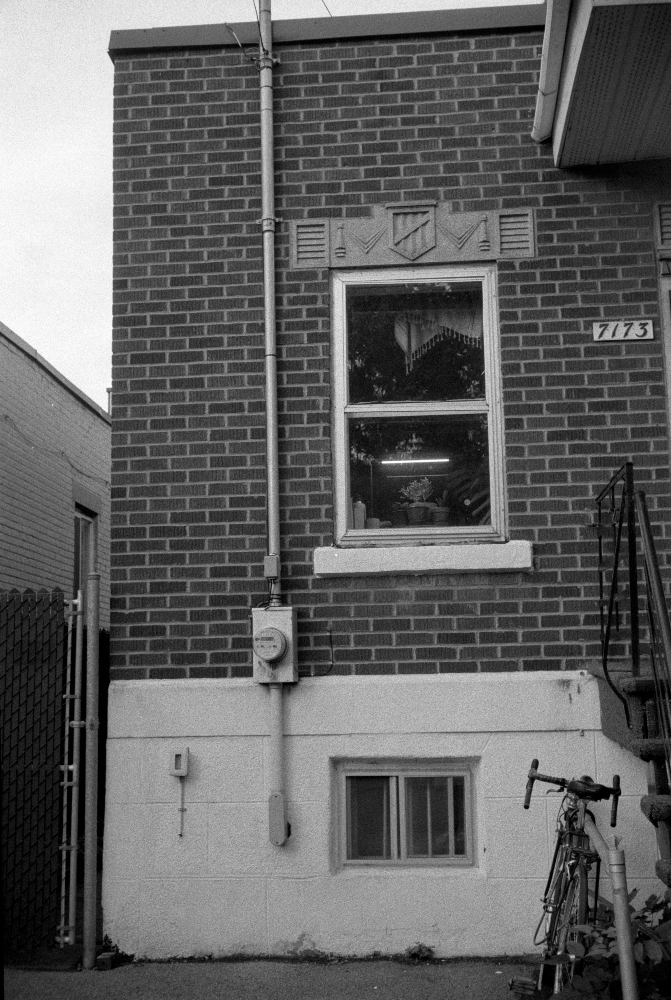
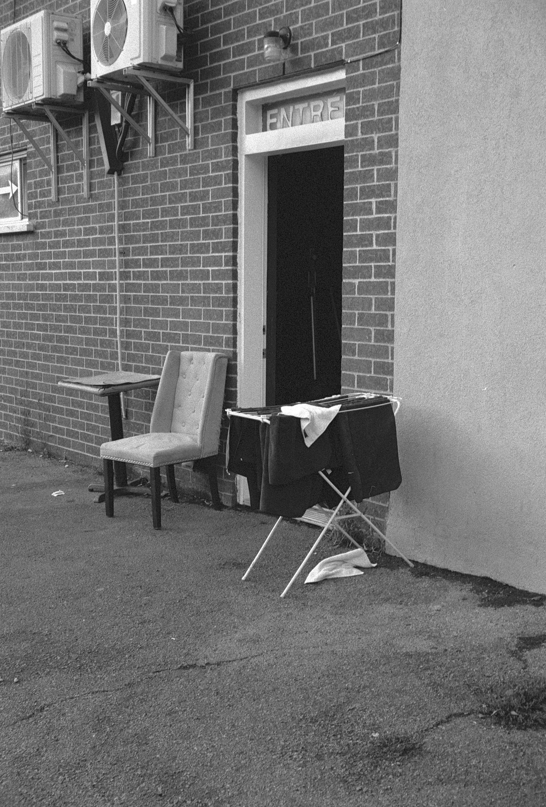

Before processing the photos
I can’t remember where I started. Oh wait yes I do. I started with a whole roll of film, and then I moved on to a few pictures on the same roll each day. The interval I chose was not temporal. Or maybe it was. A different form of temporality.
I decided to take photos each day at the time of day where I felt inspired to. The time to take a photo would be a moment where something would catch my attention.